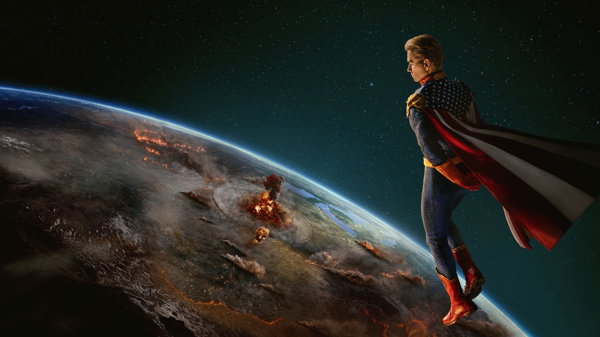
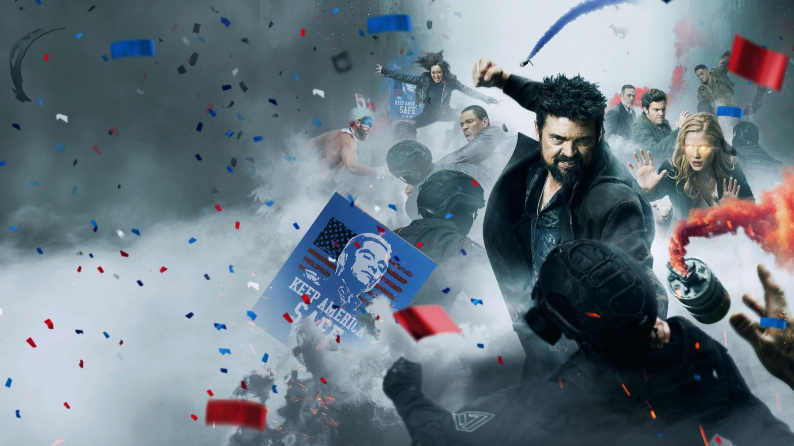

The Boys – Stagione 4
Homelander non è mai stato così spaventoso e il ritorno al laboratorio vale la stagione, però i Boys girano in tondo fino al finale
La quarta stagione di The Boys va a due velocità, e proprio la distanza tra le due è il suo problema. Homelander corre: Antony Starr lo porta al punto più nero della serie. I Boys invece restano fermi, perché per sei episodi inseguono piani destinati a fallire e tornano sempre al via. Per noi restano otto episodi da vedere, sia per una puntata in particolare sia per un finale che finalmente cambia le regole del gioco. Però è anche il primo ciclo in cui la serie sembra aspettare sé stessa.
Butcher, avvelenato dal V24, ha più o meno sei mesi di vita. Homelander invece vuole prendersi il mondo, e per riuscirci si fa aiutare da Sister Sage (Susan Heyward), mentre Firecracker (Valorie Curry) lavora per demolire Starlight. Accanto a Butcher compare intanto Joe Kessler, con il volto di Jeffrey Dean Morgan.

Il ritorno a casa di Homelander
«La saggezza dell'età», la quarta puntata, è il motivo per cui questa stagione merita il nostro tempo. Homelander scende nel laboratorio sotterraneo di Vought dove è cresciuto come una cavia, e si presenta con una torta al cioccolato a forma di balena, come un ex alunno che torna a scuola per la festa. Il personale ride a disagio, poi capisce. Lui allora racconta da dove viene, ma lo fa con le parole e senza un flashback: da bambino piangeva così forte, dice, che le lacrime gli evaporavano sulla faccia («my tears sizzled away», nell'originale).
Poi regola i conti uno per uno. Frank finisce bruciato nello stesso forno in cui gli scienziati chiudevano il piccolo John per gli esperimenti. Marty, che da ragazzo aveva riso di lui nudo, subisce un'umiliazione davanti ai colleghi prima di morire. Barbara invece, la responsabile del laboratorio e l'unica che non aveva paura di lui, resta viva: Homelander la chiude nella sua vecchia stanza insieme ai cadaveri. Qui la serie, che di solito usa la violenza come una battuta, la trasforma in un racconto sull'infanzia di un mostro.
Starr ci riesce perché non chiede compassione, eppure la ottiene. La scelta decisiva è proprio quella di non mostrarci il bambino, così l'orrore passa tutto dalla sua voce, mentre serve la torta ai suoi vecchi aguzzini come un padrone di casa premuroso. Nella terza stagione, che abbiamo recensito, il suo Homelander cercava l'approvazione di un padre come Soldier Boy; adesso invece ha smesso di cercarla e la pretende dal mondo intero, con Sister Sage che gli suggerisce dove colpire.
I Boys fermi al palo
Il problema sta dall'altra parte. La stagione dovrebbe raccontare persone costrette a cambiare, ma per gran parte del tempo le rimette davanti agli stessi dilemmi. Hughie e Annie tornano a litigare per poi riavvicinarsi. Intanto la storia di Frenchie e Kimiko corre su un binario separato.
Butcher, in particolare, ripete sempre lo stesso errore: ogni volta che può stare con Ryan, preferisce la vendetta, e ogni volta la serie ci chiede di sorprenderci. Alla terza volta però non ci sorprendiamo più, quindi il conto alla rovescia dei suoi sei mesi perde peso. Christian Colli su Multiplayer.it la trova prevedibile e meno ironica delle precedenti, e siamo d'accordo con lui, perché qui si ride molto meno e la tensione non basta a compensare.
Lo si vede bene con Firecracker. Durante un suo comizio qualcuno diffonde le cartelle cliniche di Starlight con il suo aborto, e lo scontro fisico tra le due finisce davanti alle telecamere. La scena funziona, perché la satira della televisione che trasforma la vita privata in spettacolo è precisa. Ma poi la rivalità gira su sé stessa per altri tre episodi, dato che Firecracker resta una caricatura che grida e Starlight non può fare altro che rispondere.

Quando la serie colpisce allo stomaco
Quando lascia le schermaglie e torna ai sentimenti, invece, The Boys ritrova la mira. La madre di Hughie inietta il Composto V al marito in fin di vita, e lui si rimette in piedi. Nella quinta puntata però diventa confuso e aggressivo, uccide alcune persone dell'ospedale, e così Hughie deve lasciarlo andare con le sue mani. È la parte più dolorosa della stagione, e anche la più semplice.
Lo stesso vale per A-Train, che per noi ha l'arco narrativo meglio riuscito, perché è l'unico personaggio che cambia davvero, fino a scappare dal Paese con la sua famiglia nel settimo episodio. Il sesto, «Affari sporchi», è invece quello che tutti ricordano per lo scandalo: i Boys si infiltrano a una festa nella villa di Tek Knight (Derek Wilson), Hughie si fa scoprire sotto il travestimento e la serata degenera. È The Boys al suo massimo di provocazione, ma dopo il ritorno al laboratorio sembra un passo indietro, perché là lo choc aveva un significato, mentre qui spesso è fine a sé stesso.
Un finale che cambia le regole
L'ultimo episodio ripaga molta della pazienza. Butcher uccide Victoria Neuman con i tentacoli che gli sono spuntati dal corpo; allora lo speaker della Camera Steven Calhoun diventa presidente, dichiara la legge marziale e dà a Homelander una copertura legale. Quasi tutti i Boys finiscono catturati e solo Annie riesce a scappare. Dopo i titoli di coda, poi, scopriamo dove tengono Soldier Boy.
C'è poi un dettaglio che cambia il modo in cui si guarda la morte di Neuman. Le riprese della stagione erano finite nell'aprile 2023, cioè più di un anno prima dell'uscita, e l'episodio si chiamava «Assassination Run». Il 18 luglio 2024, però, pochi giorni dopo l'attentato a Donald Trump, Amazon lo ha pubblicato come «Season Four Finale», con un avviso in apertura che definisce casuale e involontaria ogni somiglianza con i fatti recenti. Una serie nata per esagerare la realtà si è quindi trovata a doverne prendere le distanze.
Il confronto con l'annata precedente dice molto. Là il finale rimetteva tutti i pezzi al loro posto, mentre qui li butta per aria, e i personaggi entrano nel capitolo conclusivo in un'America già persa. Proprio questo distingue The Boys dal genere che prende in giro: in un film Marvel la squadra si riunisce e il cattivo cade, qui invece Homelander vince per interposta persona e i Boys finiscono in cella. Il prezzo è che le sei puntate centrali sembrano un lungo corridoio per arrivarci. Infatti l'11 giugno 2024, due giorni prima dell'uscita, è arrivato l'annuncio che la quinta sarebbe stata l'ultima: la storia aveva bisogno di una fine.
I numeri in breve
Su Rotten Tomatoes The Boys 4 ha il 92% di recensioni positive su 142, su Metacritic 76 su 100, un gradino sotto la terza. Il pubblico però non si è tirato indietro: oltre 55 milioni di spettatori nel mondo nei primi 39 giorni, al quarto posto tra le stagioni più viste di Prime Video. Agli Emmy tecnici ha vinto tre statuette, per la canzone originale e per il coordinamento e l'esecuzione degli stunt, mentre ai Saturn Award Antony Starr ha vinto come miglior attore non protagonista.
Per chi è e per chi no
È per chi ha amato le prime tre annate e vuole arrivare preparato alla quinta, che ne raccoglie direttamente l'eredità, perché senza questa l'ultima annata non si capisce. Non è invece per chi si era affezionato al tono beffardo degli inizi, dato che qui si ride poco. E non è nemmeno per chi non regge la violenza esplicita: il ritorno al laboratorio e la festa da Tek Knight sono tra le puntate più dure della serie. Gli otto episodi sono su Prime Video, inclusi nell'abbonamento.
La stagione più cupa di The Boys: un Homelander memorabile e un grande finale, ma in mezzo i Boys girano in tondo.
Domande frequenti
Quanti episodi ha la quarta stagione di The Boys?
Otto, usciti su Prime Video dal 13 giugno al 18 luglio 2024: i primi tre insieme, poi uno a settimana.
Chi sono i nuovi personaggi di The Boys 4?
Sister Sage (Susan Heyward), Firecracker (Valorie Curry) e Joe Kessler, interpretato da Jeffrey Dean Morgan.
Perché il finale di The Boys 4 ha cambiato titolo?
Si chiamava «Assassination Run», ma dopo l'attentato a Donald Trump del luglio 2024 Amazon lo ha pubblicato come «Season Four Finale», con un avviso sulla somiglianza con i fatti reali.
Dove vedere The Boys?
Tutte le stagioni sono su Prime Video, incluse nell'abbonamento.
Fonti consultate (7)
- Wikipedia – The Boys season 4
- Wikipedia – Episodi di The Boys (quarta stagione)
- AV Club – The Boys 4x04, recensione (Saloni Gajjar)
- Movieplayer.it – The Boys 4, la recensione (Luca Ceccotti)
- Multiplayer.it – The Boys 4, la recensione (Christian Colli)
- NBC News – The Boys adds disclaimer to season finale
- TMDB – The Boys